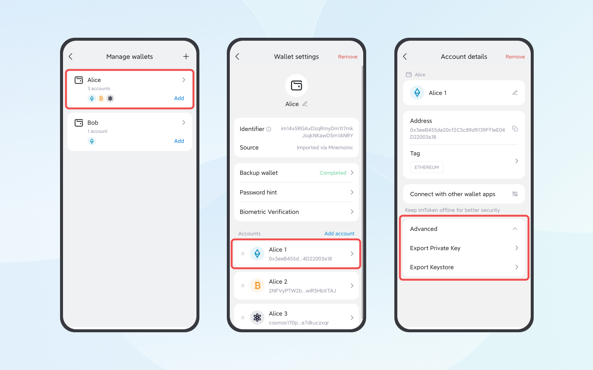

One of the features of imToken, a decentralized wallet, is that users are the sole holders of mnemonic/private keys, having full control over their tokens. This also means that they will lose control of their tokensif the mnemonic/private key is lost. So be sure to back up your wallet and keep it safe.
There are three ways to back up a wallet, namely mnemonic, private key, and keystore.
- Mnemonic: the mnemonic generated through imToken consists of 12 words. Using a mnemonic is the easiest way to back up a wallet among the three.
- Private Key: it is used to generate a signature needed for transactions to prove the ownership of tokens.
- Keystore: it is an encrypted version of your private key in JSON format.
How to Back Up a Wallet?
If you want to back up the mnemonic, please refer to this tutorial.
If you want to back up the private key/keystore, please follow the steps below:
1. Navigate to "My Profile" and then "Manage Wallets". Choose the wallet you wish to access, and select the account you'd like to back up.
2. After entering account details, click "Advanced" - "Export Private Key" or "Export Keystore" and enter the wallet password.

Note: given different standards imposed by public chain communities, the keystore of some wallets cannot be exported. The "Advanced" option is not available for ones that don’t support the export of their private key and keystore.
3. Back up the private key/keystore according to the security prompts and keep them safe.
Please note that only the private key of the child address of a BTC wallet can be exported in imToken. Here are the steps:
- Open the BTC account, click "My Profile" - "Manage wallets" in imToken, click the wallet to enter the wallet settings page
- Click the BTC account in the account list
- Click "Sub-address Management" on the account details page
- Swipe left on the child address that you want to back up and enter the password.
- Back up the private key according to the security prompts and keep it safe.
Note:
- You can reset the password through the mnemonic/private key if you forget it. Check out the details in What should I do if I forget my password?
- Please carefully keep the keystore and the password since they need to be put into use at the same time.
Related Articles:
Note: Please keep your backup mnemonic phrase safe. The correct way to back it up is using physical media, such as writing it down by hand on a piece of paper or using a imKey HeirBOX Mnemonic Storage. Because these physical media cannot be connected to the internet or transfer information between electronic devices, they can truly save your mnemonic phrase offline.